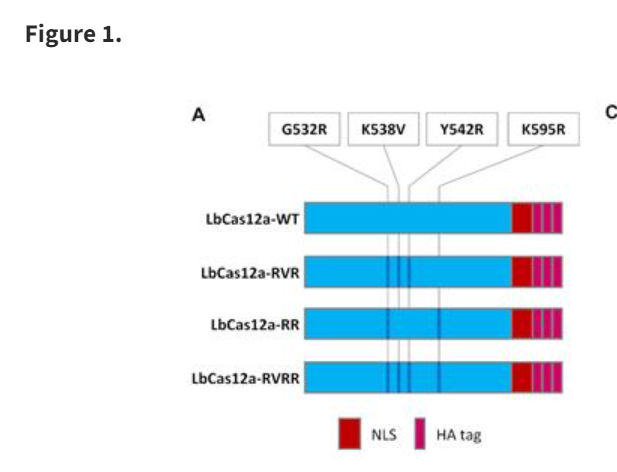

Cas12a Variant Structural Predictions With AlphaFold2
Presented as a Virtual Tutorial for the ISMB 2023 Meeting in Lyon, France
The Intrepid Trainers
- Geraldine Van de Auwera, Ph.D. Independent Consultant and Author of "Genomics in the Cloud"
- Adelaide Rhodes, Ph.D. Senior Bioinformatics Engineer and proud owner of Blue
Prerequisites
-
Request a free Gmail account to enable the Colaboratory Demo
Schedule
Workshop Schedule
Note: Times are relative to the start and end times of the Tutorial
0:00:00 - 0:15:00 Introductions
0:15:00 - 0:30:00 Introduction to the AlphaFold Tools and Database
0:30:00 - 0:45:00 Setting up Colaboratory Notebooks to run code with a free Gmail account
We are going to use a streamlined version of AlphaFold that is available on publicly available notebooks with free compute resources. A gmail account is required for the initial sign in.
0:45:00 - 1:45:00 Hands On Activity
- Introduction to the Data Sets used
Introduction To Cas12a Variant Structural Predictions With AlphaFold2

-
Introduction to the Compute Environment
-
How to use a Google Colaboratory Notebook
-
Different Options that can be Found in ColabFold
-
Location of protein models from the Cas12a paper(s)
-
Introduction to the Alphafold Command Line Parameters
- View the Code in the Notebooks
- Run Alphafold using Colaboratory Notebooks
AlphaFold2 Accuracy Assessment
- Review Alphafold results (RELAXED vs RELAXED_GPU)
- Download Alphafold results
If Results were not accessible because of glitches with the notebook or runtime, here are the results that will be used in the next step.
LibCas12a_mut2B-W_with_template.pdb
1:45:00 - 2:00:00 Coffee Break
2:00:00 - 2:20:00 Introduction to PyMoL and other Protein Viewers (e.g. Cn3D)
2:20:00 - 2:30:00 Setting up PyMoL on your own machine
2:30:00 - 3:30:00 Hands On Activity
- Loading files into PyMOL
- Picking residues to highlight
-
Other options in PyMOL for examining the protein structure
-
What have we learned from the visualizations?
- What other questions might we ask?
3:30:00 - 3:45:00 Discussion session: How can this tool be applied to your research question? 3:45:00 - 4:00:00 Wrap up Lecture on Future Directions for AI and Resources for Further Study
References
ColabFold: making protein folding accessible to all
DeepMind's AlphaFold 2 Explained
Acknowledgements
Thank you to Tufts Research Technology and Jason Laird for contributing the seeds of this lesson on Alphafold